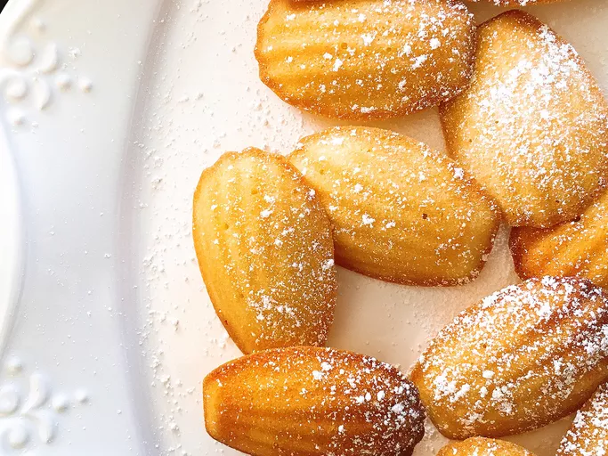

Madeleine Recipe

Description
Soft, buttery French sponge cakes with a delicate shell shape and lightly crisp
edges - perfect with tea or coffee!
Ingredients
- 2 large eggs
- 1/2 cup (100g) sugar
- 1 tsp vanilla extract
- 1/2 cup (60g) all-purpose flour
- Pinch of salt
- 1/2 cup(115g) unsalted butter, melted and cooled
- Optiona;: lemon zest or a dusting of powdered sugar
Steps:
- Prep batter: Beat eggs and sugar until pale and fluffy(3-5 mins). Add vanilla. Gently fold in flour,
baking powder, salt, and zest. Finally, fold in melted batter.
- Chill:Cover and chill batter for 30 - 60 minutes (important for signature hump).
- Bake:Preheat oven to 190C. Grease a madeleine pan well. Spoon batter into molds (about 3/4 full).
Bake for 10-12 minutes or until golden with a hump in the middle.
- Cool & serve: Let cool slightly, then remove from pan. Dust with powdered sugar if desired.